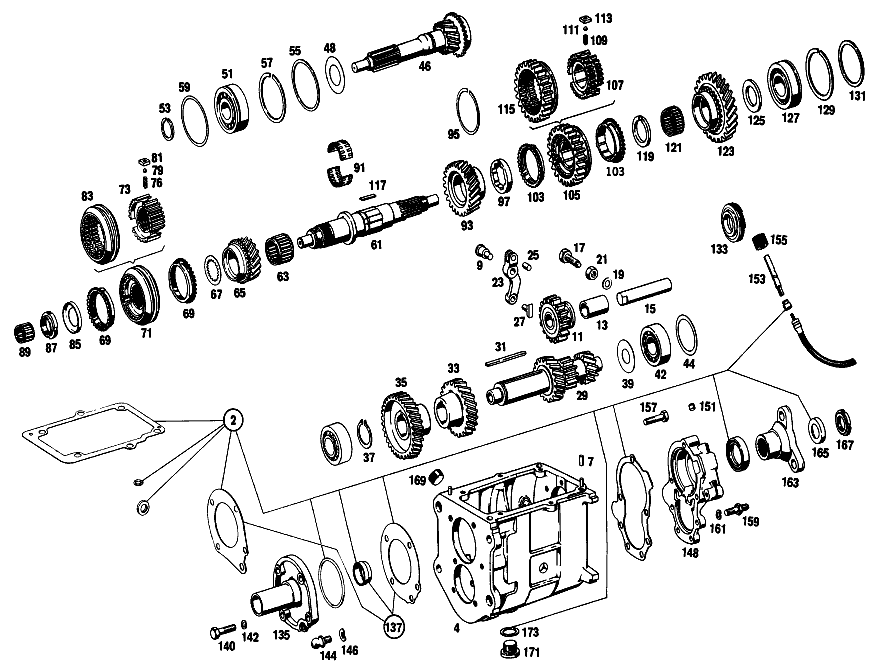

| № | Артикул | Название | Кол. | Примечание |
|---|---|---|---|---|
| 2 | A 111 260 00 68 | набор уплотнений | 1 | |
| 7 | N 000007 006205 | - Цилиндрический штифт | 2 | |
| 9 | A 111 262 00 74 | - Палец | 1 | |
| 11 | A 120 260 03 25 | Шестерня заднего хода | 1 | |
| 13 | A 120 263 03 50 | - втулка | 1 | |
| 15 | A 186 263 00 30 | Ось шестерни заднего хода | 1 | |
| 17 | A 110 990 01 10 | БОЛТ | 1 | |
| 19 | N 000137 010201 | Пружинная шайба | 1 | |
| 21 | N 000934 010005 | Гайка | 1 | |
| 23 | A 136 260 00 37 | РЫЧАГ | 1 | ПЕРЕДАЧА ЗАДНЕГО ХОДА |
| 25 | N 900037 008104 | - Установочный штифт | 1 | |
| 27 | A 121 263 01 23 | Скользящая муфта | 1 | ПЕРЕДАЧА ЗАДНЕГО ХОДА |
| 29 | A 111 263 05 02 | ПРОМЕЖУТОЧНЫЙ ВАЛ | 1 | |
| 31 | A 186 991 03 68 | Призматическая шпонка | 1 | |
| 33 | A 111 263 00 13 | Шестерня | 1 | 38 TEETH; 3RD SPEED |
| 35 | A 111 263 00 10 | Шестерня | 1 | 43 TEETH, 4TH SPEED |
| 37 | N 900055 035300 | Стопорное кольцо | 1 | |
| 39 | A 186 990 18 40 | Диск | 1 | |
| 42 | A 001 981 71 25 | ШАРИКОПОДШИПНИК | - | |
| 42 | A 004 981 42 01 | Подшипник с цил. роликами | 2 | |
| 44 | A 120 263 08 52 | Компенсационная шайба | NB | 1.00 MM |
| 46 | A 111 260 13 20 | Приводной вал | 1 | |
| 48 | A 186 262 00 66 | Маслозащитное кольцо | 1 | |
| 51 | A 002 981 06 25 | ШАРИКОПОДШИПНИК | 1 | |
| 51 | A 002 981 07 25 | Рад. шарикоподшипник | 1 | |
| 53 | A 123 262 04 94 | Пруж. стопорное кольцо | 1 | |
| 55 | A 186 262 04 51 | Проставочное кольцо | 1 | |
| 57 | A 136 994 06 35 | Пруж. стопорное кольцо | 1 | ПО НЕОБХОДИМОСТИ 1.9 MM |
| 59 | A 136 262 06 52 | Компенсационная шайба | NB | ПО НЕОБХОДИМОСТИ 0.1 MM |
| 61 | A 180 262 01 05 | Вторичный вал | 1 | |
| 63 | A 001 981 68 10 | ПОДШИПНИК ИГОЛЬЧАТЫЙ | 1 | ТРЕТЬЯ ПЕРЕДАЧА |
| 65 | A 111 260 03 44 | Цил. косозубая шестерня | 1 | Z=31 |
| 67 | A 120 262 23 62 | Упорная шайба | 1 | ШЕСТЕРНЯ ТРЕТЬЕЙ ПЕРЕДАЧИ |
| 69 | A 113 262 00 34 | Кольцо синхронизатора | 2 | ТРЕТЬЯ И ЧЕТВЁРТАЯ ПЕРЕДАЧА |
| 71 | A 111 260 08 45 | Корпус синхронизатора | 1 | ТРЕТЬЯ И ЧЕТВЁРТАЯ ПЕРЕДАЧА |
| 73 | A 111 262 04 35 | - Корпус синхронизатора | - | ТРЕТЬЯ И ЧЕТВЁРТАЯ ПЕРЕДАЧА |
| 76 | A 180 993 41 01 | - пружина | 3 | |
| 79 | N 005401 306500 | - Шар | 3 | 6.5mm |
| 81 | A 121 262 00 40 | - Поводок | 3 | |
| 83 | A 111 262 04 23 | - СКОЛЬЗ. МУФТА СИНХРОНИЗ. | - | ТРЕТЬЯ И ЧЕТВЁРТАЯ ПЕРЕДАЧА |
| 85 | A 120 994 01 15 | Стопорная шайба | 1 | |
| 87 | A 120 262 03 26 | Шлицевая гайка | 1 | |
| 89 | A 002 981 34 12 | Сепаратор роликоподш. | 1 | |
| 91 | A 120 981 03 12 | Сепаратор роликоподш. | 1 | |
| 93 | A 110 260 01 19 | Цил. косозубая шестерня | 1 | Z=35 |
| 95 | N 005417 065000 | - Пруж. стопорное кольцо | 1 | |
| 97 | A 120 262 16 62 | ШАЙБА УПОРНАЯ | 1 | ПО НЕОБХОДИМОСТИ 7.9 MM |
| 97 | A 120 262 19 62 | ШАЙБА УПОРНАЯ | 1 | ПО НЕОБХОДИМОСТИ 8.0 MM |
| 97 | A 120 262 20 62 | Упорная шайба | 1 | ПО НЕОБХОДИМОСТИ 8.10 MM |
| 103 | A 113 262 00 34 | Кольцо синхронизатора | 2 | ПЕРВАЯ И ВТОРАЯ ПЕРЕДАЧА |
| 105 | A 111 260 09 45 | Корпус синхронизатора | 1 | ПЕРВАЯ И ВТОРАЯ ПЕРЕДАЧА |
| 107 | A 111 262 06 35 | - СИНХРОНИЗАТОР | - | |
| 109 | A 180 993 41 01 | - пружина | 3 | |
| 111 | N 005401 306500 | - Шар | 3 | 6.5mm |
| 113 | A 121 262 00 40 | - Поводок | 3 | |
| 115 | A 111 262 06 23 | - СКОЛЬЗ. МУФТА СИНХРОНИЗ. | - | |
| 117 | A 120 262 00 81 | Вставной клин | 1 | |
| 119 | A 120 262 11 62 | Упорная шайба | 1 | ПО НЕОБХОДИМОСТИ 4.40 MM |
| 121 | A 001 981 69 10 | Игольчатый подшипник | 1 | ПЕРВАЯ ПЕРЕДАЧА |
| 123 | A 110 260 00 19 | Цил. косозубая шестерня | 1 | ПЕРВАЯ ПЕРЕДАЧА |
| 125 | A 186 262 01 62 | Упорная шайба | 1 | ПО НЕОБХОДИМОСТИ 3.80 MM |
| 127 | A 002 981 06 25 | ШАРИКОПОДШИПНИК | 1 | |
| 129 | A 000 994 16 40 | СТОПОРН. КОЛЬЦО | 1 | |
| 131 | A 136 262 04 52 | Компенсационная шайба | NB | ПО НЕОБХОДИМОСТИ 0.1 MM |
| 133 | A 110 264 00 30 | Ведущее колесо | 1 | |
| 135 | A 111 260 08 21 | КРЫШКА КОРПУСА | 1 | СПЕРЕДИ |
| 137 | A 111 586 01 26 | РЕМКОМПЛЕКТ | 1 | |
| 140 | N 000931 008046 | Винт | - | |
| 140 | N 304017 008018 | Винт с 6-гранной головкой | 4 | M8X35 |
| 142 | N 000137 008204 | Пружинная шайба | 4 | |
| 144 | A 111 991 00 15 | Шаровой палец | 1 | ВИЛКА ВЫЖИМНАЯ |
| 146 | N 000137 010201 | Пружинная шайба | 1 | |
| 148 | A 111 260 04 16 | Крышка корпуса | 1 | СЗАДИ |
| 151 | A 153 264 00 55 | - Пробка | 1 | |
| 153 | A 111 264 00 32 | Вал | 1 | |
| 155 | A 120 264 02 31 | Ведущее колесо | 1 | |
| 157 | N 000931 008046 | Винт | - | |
| 157 | N 304017 008018 | Винт с 6-гранной головкой | 3 | M8X35 |
| 159 | A 111 990 00 10 | БОЛТ | 4 | |
| 161 | N 000137 008204 | Пружинная шайба | 7 | |
| 163 | A 111 262 00 45 | Фланец | 1 | |
| 165 | A 186 262 01 73 | предохранитель | 1 | |
| 167 | A 186 262 02 26 | Шлицевая гайка | 1 | |
| 169 | A 186 997 00 32 | ЗАГЛУШКА РЕЗЬБОВАЯ | 1 | M24X1,5 |
| 171 | A 186 997 00 32 | ЗАГЛУШКА РЕЗЬБОВАЯ | 1 | M24X1,5 |
| 173 | N 007603 024105 | Уплотнительное кольцо | 1 | |
| 458 | A 111 260 32 14 | КРЫШКА КОРПУСА | 1 | TOP, с SELECTOR LEVER |
| 460 | A 111 260 31 14 | - КРЫШКА КОРПУСА | 1 | СВЕРХУ |
| 462 | A 153 992 00 05 | - втулка | 1 | |
| 464 | A 136 265 00 48 | - Запор | 1 | |
| 466 | A 180 993 26 01 | - пружина | 1 | |
| 468 | A 094 990 92 07 | - Уплотнительное кольцо | 1 | |
| 470 | A 136 997 08 30 | - Резьбовая пробка | 1 | |
| 472 | A 136 265 02 47 | - Палец | 2 | |
| 474 | A 183 265 00 46 | - Фиксирующая пластина | 1 | |
| 477 | A 319 268 05 32 | - ВАЛ | 1 | |
| 479 | A 186 268 00 33 | - КУЛАЧОК ПЕРЕКЛЮЧЕНИЯ | 1 | |
| 481 | A 183 268 00 52 | - Компенсационная шайба | 1 | |
| 484 | A 000 981 01 10 | - Игольчатый подшипник | 2 | |
| 487 | A 186 997 01 20 | - ПРОБКА | 1 | |
| 490 | N 000472 022000 | - Стопорное кольцо | 1 | |
| 492 | N 006503 012100 | - Уплотнительное кольцо | 1 | |
| 494 | A 111 260 01 79 | - Палец выбора передач | 1 | |
| 496 | A 186 997 11 40 | - Уплотнительное кольцо | 1 | |
| 499 | A 110 260 01 37 | - РЫЧАГ | 1 | |
| 503 | A 000 992 01 10 | - втулка | 1 | |
| 505 | A 186 260 03 28 | - ПЛАСТИНА НАПРАВЛЯЮЩАЯ | 1 | |
| 508 | A 136 990 82 40 | - Диск | 2 | |
| 511 | A 136 265 02 72 | - гайка | 2 | |
| 514 | A 186 265 00 01 | - ВИЛКА ПЕРЕКЛЮЧЕНИЯ | 1 | ПЕРВАЯ И ВТОРАЯ ПЕРЕДАЧА |
| 517 | A 309 265 01 02 | - Вилка перекл.передач | 1 | ТРЕТЬЯ И ЧЕТВЁРТАЯ ПЕРЕДАЧА |
| 520 | A 180 265 01 07 | - Ручка рычага перекл.пер. | 1 | ПЕРЕДАЧА ЗАДНЕГО ХОДА |
| 522 | A 186 993 13 01 | - пружина | 3 | |
| 525 | N 005401 308000 | - Шар | 3 | |
| 527 | A 136 265 00 53 | - Проставочная трубка | 2 | SHIFTING FORKS |
| 529 | A 136 265 01 53 | - Проставочная трубка | 1 | SHIFTING HEAD |
| 531 | A 111 990 34 40 | - Диск | 3 | ПО НЕОБХОДИМОСТИ 0.3 MM |
| 533 | A 136 265 04 04 | - ТЯГА ПЕРЕКЛ. ПЕРЕДАЧ | 1 | ПЕРВАЯ И ВТОРАЯ ПЕРЕДАЧА |
| 535 | A 136 265 05 04 | - ТЯГА ПЕРЕКЛ. ПЕРЕДАЧ | 1 | ТРЕТЬЯ И ЧЕТВЁРТАЯ ПЕРЕДАЧА |
| 537 | A 136 265 02 04 | - ТЯГА ПЕРЕКЛ. ПЕРЕДАЧ | 1 | ПЕРЕДАЧА ЗАДНЕГО ХОДА |
| 539 | A 184 265 00 53 | - Проставочная трубка | 1 | |
| 541 | A 136 265 00 81 | - Клин | 1 | |
| 543 | A 094 260 11 00 | - Воздушный клапан | 1 | |
| 545 | A 110 260 04 37 | Рычаг | 1 | ВАЛ ПЕРЕКЛЮЧЕНИЯ |
| 547 | A 000 992 01 10 | - втулка | 1 | |
| 550 | A 111 261 01 79 | ПРОКЛАДКА УПЛОТНИТЕЛЬНАЯ | 1 | |
| 553 | N 000931 008171 | БОЛТ | 4 | |
| 556 | N 000931 008217 | Винт | 2 | |
| 558 | N 000137 008204 | Пружинная шайба | 2 | |
| 561 | A 000 545 12 06 | Переключатель | 1 | СВЕТ ФАРЫ ЗАДНЕГО ХОДА |
| 563 | A 002 545 24 28 | - ШТЕКЕР | - | |
| 563 | A 009 545 40 28 | - Сцепление, механическое | 1 | ДВОЙН.; 2\-PIN |
| 565 | A 094 990 92 07 | Уплотнительное кольцо | 1 | |
| 567 | A 111 546 01 43 | ДЕРЖАТЕЛЬ | 1 | |
| 569 | A 003 988 79 78 | СКОБА | 1 | |
| 571 | A 108 260 08 82 | ТЯГА ПЕРЕКЛЮЧЕНИЯ | 1 | |
| 573 | A 108 268 00 39 | Направляющий палец | 1 | |
| 575 | A 111 997 12 40 | Уплотнительное кольцо | 2 | |
| 577 | A 186 990 69 40 | Диск | NB | |
| 579 | A 186 268 02 73 | предохранитель | 1 | |
| 581 | A 186 268 02 74 | Палец | 1 | |
| 583 | A 182 993 08 01 | пружина | 1 | |
| 586 | A 108 268 00 97 | Манжета | 1 | |
| 589 | A 108 268 03 24 | РЫЧАГ ПЕРЕКЛЮЧЕНИЯ | 1 | |
| 591 | A 111 268 03 92 | РЕЗИНОВАЯ ПОДУШКА | 1 | |
| 593 | A 180 268 00 57 | Колпачок | 1 | |
| 595 | A 108 268 00 42 | Кнопка ручки рычага КП | 1 | |
| 597 | A 111 260 28 94 | ОПОРА ПОДШИПНИКА | 1 | |
| 600 | A 000 981 21 10 | - Игольчатый подшипник | 2 | |
| 603 | A 111 260 04 15 | РЫЧАГ | 1 | ТЯГА ПЕРЕКЛЮЧЕНИЯ |
| 606 | A 111 268 10 50 | втулка | 1 | |
| 609 | A 111 268 02 51 | Проставочное кольцо | 1 | |
| 612 | N 000137 006204 | Пружинная шайба | 4 | |
| 615 | N 000934 006007 | Гайка | 4 | |
| 618 | A 111 268 07 05 | Крышка | 1 | |
| 621 | A 111 260 21 81 | РЫЧАГ | - | |
| 621 | A 111 260 13 81 | РЫЧАГ | 1 | |
| 624 | A 000 981 21 10 | - Игольчатый подшипник | 2 | |
| 627 | A 180 997 08 40 | - УПЛОТНИТ. КОЛЬЦО | 2 | |
| 630 | A 312 990 03 40 | Диск | 1 | |
| 633 | N 900055 012001 | Пружинная шайба | 1 | |
| 636 | N 006799 010001 | Стопорная шайба | 1 | |
| 639 | N 000127 008203 | Пружинное кольцо | 2 | |
| 642 | N 000934 008013 | Гайка | 2 | |
| 645 | A 180 268 02 15 | РЫЧАГ | 1 | |
| 648 | A 180 268 00 32 | ВАЛ | 1 | |
| 651 | N 000933 006027 | БОЛТ | 1 | |
| 653 | A 094 990 68 10 | Пружинное кольцо | 1 | |
| 656 | A 180 997 08 40 | УПЛОТНИТ. КОЛЬЦО | 1 | |
| 659 | N 900055 012001 | Пружинная шайба | 1 | |
| 662 | A 180 260 02 37 | Рычаг | 1 | |
| 665 | A 111 260 00 66 | Шаровой подпятник | 1 | |
| 668 | N 000439 006200 | - Гайка | 1 | |
| 671 | N 071805 010200 | - Шаровой подпятник | 2 | |
| 673 | N 071805 010400 | Защитный кронштейн | 2 | |
| 676 | A 111 260 50 33 | ТЯГА ПЕРЕКЛ. ПЕРЕДАЧ | 1 | |
| 679 | A 111 260 48 33 | ТЯГА ПЕРЕКЛ. ПЕРЕДАЧ | 1 | |
| 683 | N 070616 010000 | Гайка | 2 | |
| 685 | A 000 991 38 22 | Шаровой подпятник | 2 | |
| 688 | A 121 990 18 40 | ШАЙБА | 2 | |
| A 111 260 17 04 | КОРОБКА ПЕРЕДАЧ | 1 | с BELL HOUSING | |
| A 111 260 18 04 | КОРОБКА ПЕРЕДАЧ | 1 | ||
| A 111 260 04 11 | Корпус коробки передач | 1 | ||
| N 000417 010006 | РЕЗЬБОВОЙ ШТИФТ | - | ||
| A 110 263 04 02 | ПРОМЕЖУТОЧНЫЙ ВАЛ | - | ||
| A 110 263 07 02 | Промвал коробки передач | 1 | ||
| A 110 263 09 02 | Промвал коробки передач | 1 | ||
| A 602 263 02 52 | Дистанционная шайба | NB | 0.10 MM | |
| A 602 263 03 52 | Дистанционная шайба | NB | 0.25 MM | |
| A 602 263 04 52 | Дистанционная шайба | NB | 0.50 MM | |
| A 136 994 09 35 | Пруж. стопорное кольцо | 1 | ПО НЕОБХОДИМОСТИ 2.00 MM | |
| A 136 994 07 35 | СТОПОРН. КОЛЬЦО | - | ||
| A 136 994 09 35 | Пруж. стопорное кольцо | 1 | ПО НЕОБХОДИМОСТИ 2.05 MM | |
| A 136 262 07 52 | Компенсационная шайба | NB | ПО НЕОБХОДИМОСТИ 0.2 MM | |
| A 136 262 08 52 | Компенсационная шайба | NB | ПО НЕОБХОДИМОСТИ 0.3 MM | |
| A 000 981 63 12 | СЕПАРАТОР ИГОЛЬЧ. ПОДШ. | - | ||
| A 110 260 02 19 | ШЕСТЕРНЯ | 1 | Z=35 | |
| A 120 262 13 62 | Упорная шайба | 1 | ПО НЕОБХОДИМОСТИ 4.50 MM | |
| A 120 262 15 62 | Упорная шайба | 1 | ПО НЕОБХОДИМОСТИ 4.60 MM | |
| A 113 262 01 11 | ШЕСТЕРНЯ | 1 | ПЕРВАЯ ПЕРЕДАЧА | |
| N 005417 065000 | - Пруж. стопорное кольцо | 1 | ||
| A 186 262 02 62 | Упорная шайба | 1 | ПО НЕОБХОДИМОСТИ 3.90 MM | |
| A 186 262 03 62 | Упорная шайба | 1 | ПО НЕОБХОДИМОСТИ 4.00 MM | |
| A 186 262 04 62 | ШАЙБА УПОРНАЯ | 1 | ПО НЕОБХОДИМОСТИ 4.10 MM | |
| A 186 262 05 62 | Упорная шайба | 1 | ПО НЕОБХОДИМОСТИ 4.20 MM | |
| A 186 262 06 62 | ШАЙБА УПОРНАЯ | 1 | ПО НЕОБХОДИМОСТИ 4.30 MM | |
| A 186 262 07 62 | Упорная шайба | 1 | ПО НЕОБХОДИМОСТИ 4.40 MM | |
| A 186 262 08 62 | Упорная шайба | 1 | ПО НЕОБХОДИМОСТИ 4.50 MM | |
| A 002 981 07 25 | Рад. шарикоподшипник | 1 | ||
| A 136 262 05 52 | Компенсационная шайба | NB | ПО НЕОБХОДИМОСТИ 0.2 MM | |
| A 136 262 09 52 | Компенсационная шайба | NB | ПО НЕОБХОДИМОСТИ 0.3 MM | |
| A 186 261 00 60 | Уплотнительное кольцо | 1 | ||
| A 111 261 03 79 | Уплотнительная прокладка | 1 | ||
| A 000 987 40 46 | Возвратный рычаг | 1 | ||
| A 000 997 17 46 | УПЛОТНИТ. КОЛЬЦО | 1 | ||
| A 115 274 00 60 | УПЛОТНИТ. КОЛЬЦО | 1 | ||
| A 111 261 00 79 | Уплотнительная прокладка | 1 | ||
| N 000931 006021 | БОЛТ | 1 | ||
| N 000137 006204 | Пружинная шайба | 1 | ||
| N 000931 010236 | Винт | 6 | КАРТЕР СЦЕПЛЕНИЯ С КП НА ПРОМЕЖУТОЧНОМ ФЛАНЦЕ | |
| N 000125 010504 | ШАЙБА | 4 | КАРТЕР СЦЕПЛЕНИЯ С КП НА ПРОМЕЖУТОЧНОМ ФЛАНЦЕ | |
| N 000137 010201 | Пружинная шайба | 4 | КАРТЕР СЦЕПЛЕНИЯ С КП НА ПРОМЕЖУТОЧНОМ ФЛАНЦЕ | |
| N 000934 010005 | Гайка | 2 | КАРТЕР СЦЕПЛЕНИЯ С КП НА ПРОМЕЖУТОЧНОМ ФЛАНЦЕ | |
| A 111 260 23 14 | - КРЫШКА КОРПУСА | - | ||
| N 000933 006130 | - Винт | 2 | DETENT PLATE TO TRANSMISSION CASE TOP COVER | |
| N 000137 006204 | - Пружинная шайба | 2 | DETENT PLATE TO TRANSMISSION CASE TOP COVER | |
| N 000934 006007 | - Гайка | 2 | DETENT PLATE TO TRANSMISSION CASE TOP COVER | |
| A 110 260 03 37 | - РЫЧАГ | 1 | ||
| N 000931 006096 | - БОЛТ | 1 | SELECTOR LEVER TO SELECTOR FINGER | |
| A 094 990 68 10 | - Пружинное кольцо | 1 | SELECTOR LEVER TO SELECTOR FINGER | |
| N 000934 006007 | - Гайка | 1 | SELECTOR LEVER TO SELECTOR FINGER | |
| A 186 265 07 01 | - Вилка перекл.передач | 1 | ПЕРВАЯ И ВТОРАЯ ПЕРЕДАЧА | |
| A 111 990 09 40 | - Диск | 3 | ПО НЕОБХОДИМОСТИ 0.5mm | |
| A 111 990 08 40 | - Диск | 3 | ПО НЕОБХОДИМОСТИ 1.0 MM | |
| A 111 261 00 66 | - ТРУБКА | 1 | ||
| N 000931 006096 | БОЛТ | 1 | РЫЧАГ К ВАЛУ ПЕРЕКЛЮЧЕНИЯ | |
| A 094 990 68 10 | Пружинное кольцо | 1 | РЫЧАГ К ВАЛУ ПЕРЕКЛЮЧЕНИЯ | |
| N 000934 006007 | Гайка | 1 | РЫЧАГ К ВАЛУ ПЕРЕКЛЮЧЕНИЯ | |
| A 111 260 25 82 | ТЯГА ПЕРЕКЛЮЧЕНИЯ | 1 | ||
| A 111 268 05 39 | НАПРАВЛЯЮЩ. ЦАПФА | 1 | ||
| A 111 268 03 97 | Манжета | 1 | ||
| A 180 268 05 24 | Рычаг перекл.передач | 1 | ||
| N 000931 008171 | БОЛТ | 1 | SELECTOR LEVER TO SELECTOR LEVER SHAFT | |
| N 000127 008203 | Пружинное кольцо | 1 | SELECTOR LEVER TO SELECTOR LEVER SHAFT | |
| N 000934 008013 | Гайка | 1 | SELECTOR LEVER TO SELECTOR LEVER SHAFT | |
| N 000094 002059 | Шплинт | 2 | 2X14 MM |
Позиций: 246 · подписано на схемах: 180 · колесо — плавный зум в курсор, перетаскивание — пан, двойной клик — зум, клик по артикулу — скопировать.